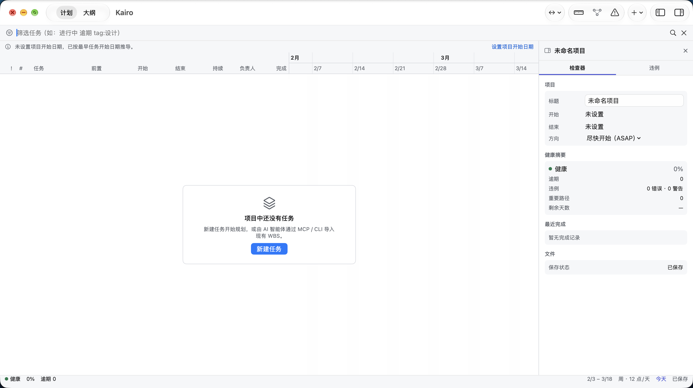

Turn requirements into a WBS
Organize work as tasks, groups and milestones. AI agents can import, read and update plans through MCP or the CLI.
Claude Code and Codex do the work. Kaido keeps the WBS, dependencies, schedule and progress in one plan you can inspect.
macOS 14+ · Local .kaido files · MCP / CLI access for AI agents

When work lives in chat history, it is hard to see whether dependencies are complete, dates conflict or tasks are done. Kaido makes the plan readable, writable and reviewable.
Organize work as tasks, groups and milestones. AI agents can import, read and update plans through MCP or the CLI.
Inspect dates, predecessors and the critical path in the macOS Gantt workbench, and surface plan violations.
Status updates return to the same plan, so people and AI can keep working from a shared WBS.
Set the goal, dates and acceptance criteria.
Have AI break down the WBS, connect dependencies and calculate a schedule.
Inspect progress, conflicts and the critical path in the Gantt chart.
AI implements tasks and writes back status as the plan evolves.
Kaido follows a dual licensing model: qualifying noncommercial use is covered by PolyForm Noncommercial; commercial use requires a separate written commercial license.
Personal study, hobbies and private projects, along with the noncommercial organizations defined by the license, may use Kaido under PolyForm Noncommercial 1.0.0. Read the full terms before use.
Read PolyForm Noncommercial 1.0.0 →Use anticipated to have a commercial application, including internal use at for-profit companies, requires a separate license. Scope, contract and pricing are subject to written agreement; this page is not an offer or grant of commercial rights.
Email ruohuyang@163.com about commercial licensing →Download the macOS app, or build from source to use the CLI and MCP server.
brew install --cask cygnusyang/kaidoplan/kaido